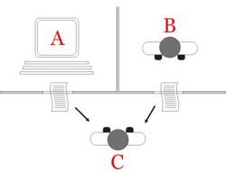
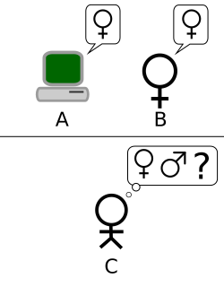

Turing test


| Part of a series on |
| Artificial intelligence (AI) |
|---|
| Glossary |
The Turing test was designed by Alan Turing to assess a machine's ability to exhibit intelligent behaviour equivalent to that of a human by imitating interactive dialogue. In the modern version, a human evaluator judges a text transcript of a natural-language conversation between a human and a machine. The evaluator tries to identify the machine, and the machine passes if the evaluator cannot reliably tell them apart. The results would not depend on the machine's ability to answer questions correctly, only on how closely its answers resembled those of a human. Since the Turing test is a test of indistinguishability in performance capacity, the original (verbal) version generalizes naturally to all of human performance capacity, including nonverbal (robotic).[2]
The test was introduced as the imitation game[3] by Turing in his 1950 paper "Computing Machinery and Intelligence" while working at the University of Manchester.[4] It opens with the words: "I propose to consider the question, 'Can machines think?'." Because "thinking" is difficult to define, Turing chooses to "replace the question by another, which is closely related to it and is expressed in relatively unambiguous words".[5] Turing describes the new form of the problem in terms of a three-person party game called the "imitation game", in which an interrogator asks questions of a man and a woman in another room in order to determine the correct sex of the two players. Turing's new question is: "Are there imaginable digital computers which would do well in the imitation game?"[3] This question, Turing believed, was one that could actually be answered. In the remainder of the paper, he argued against the major objections to the proposition that "machines can think".[6]
Since Turing introduced his test, it has been highly influential in the philosophy of artificial intelligence, resulting in substantial discussion and controversy, as well as criticism from philosophers like John Searle, who argue against the test's ability to detect consciousness.[7][8]
History
[edit]Philosophical background
[edit]The question of whether it is possible for machines to think has a long history, which is firmly entrenched in the distinction between dualist and materialist views of the mind. René Descartes prefigures aspects of the Turing test in his 1637 Discourse on the Method when he writes:
[H]ow many different automata or moving machines could be made by the industry of man ... For we can easily understand a machine's being constituted so that it can utter words, and even emit some responses to action on it of a corporeal kind, which brings about a change in its organs; for instance, if touched in a particular part it may ask what we wish to say to it; if in another part it may exclaim that it is being hurt, and so on. But it never happens that it arranges its speech in various ways, in order to reply appropriately to everything that may be said in its presence, as even the lowest type of man can do.[9]
Here Descartes notes that automata are capable of responding to human interactions but argues that such automata cannot respond appropriately to things said in their presence in the way that any human can. Descartes therefore prefigures the Turing test by defining the insufficiency of appropriate linguistic response as that which separates the human from the automaton. Descartes fails to consider the possibility that future automata might be able to overcome such insufficiency, and so does not propose the Turing test as such, even if he prefigures its conceptual framework and criterion.
Denis Diderot formulates in his 1746 book Pensées philosophiques a Turing-test criterion, though with the important implicit limiting assumption maintained, of the participants being natural living beings, rather than considering created artifacts:
If they find a parrot who could answer to everything, I would claim it to be an intelligent being without hesitation.
This does not mean he agrees with this, but that it was already a common argument of materialists at that time.
According to dualism, the mind is non-physical (or, at the very least, has non-physical properties)[10] and, therefore, cannot be explained in purely physical terms. According to materialism, the mind can be explained physically, which leaves open the possibility of minds that are produced artificially.[11]
In 1936, philosopher Alfred Ayer considered the standard philosophical question of other minds: how do we know that other people have the same conscious experiences that we do? In his book, Language, Truth and Logic, Ayer suggested a protocol to distinguish between a conscious man and an unconscious machine: "The only ground I can have for asserting that an object which appears to be conscious is not really a conscious being, but only a dummy or a machine, is that it fails to satisfy one of the empirical tests by which the presence or absence of consciousness is determined".[12][13][14] (This suggestion is very similar to the Turing test, but it is not certain that Ayer's popular philosophical classic was familiar to Turing.) In other words, a thing is not conscious if it fails the consciousness test.
Cultural background
[edit]A rudimentary idea of the Turing test appears in the 1726 novel Gulliver's Travels by Jonathan Swift.[15][16] When Gulliver is brought before the king of Brobdingnag, the king thinks at first that Gulliver might be a "a piece of clock-work (which is in that country arrived to a very great perfection) contrived by some ingenious artist". Even when he hears Gulliver speaking, the king still doubts whether Gulliver was taught "a set of words" to make him "sell at a better price". Gulliver tells that only after "he put several other questions to me, and still received rational answers" the king became satisfied that Gulliver was not a machine.[17]
Tests where a human judges whether a computer or an alien is intelligent were an established convention in science fiction by the 1940s, and it is likely that Turing would have been aware of these.[18] Stanley G. Weinbaum's "A Martian Odyssey" (1934) provides an example of how nuanced such tests could be.[18]
Earlier examples of machines or automatons attempting to pass as human include the Ancient Greek myth of Pygmalion who creates a sculpture of a woman that is animated by Aphrodite, Carlo Collodi's novel The Adventures of Pinocchio, about a puppet who wants to become a real boy, and E. T. A. Hoffmann's 1816 story "The Sandman," where the protagonist falls in love with an automaton. In all these examples, people are fooled by artificial beings that—up to a point—pass as human.[19]
Alan Turing and the imitation game
[edit]
Researchers in the United Kingdom had been exploring "machine intelligence" for up to ten years prior to the founding of the field of artificial intelligence (AI) research in 1956.[20] It was a common topic among the members of the Ratio Club, an informal group of British cybernetics and electronics researchers that included Alan Turing.[21]
Turing, in particular, had been running the notion of machine intelligence since at least 1941[22] and one of the earliest-known mentions of "computer intelligence" was made by him in 1947.[23] In Turing's report, "Intelligent Machinery,"[24] he investigated "the question of whether or not it is possible for machinery to show intelligent behaviour"[25] and, as part of that investigation, proposed what may be considered the forerunner to his later tests:
It is not difficult to devise a paper machine which will play a not very bad game of chess.[26] Now get three men A, B and C as subjects for the experiment. A and C are to be rather poor chess players, B is the operator who works the paper machine. ... Two rooms are used with some arrangement for communicating moves, and a game is played between C and either A or the paper machine. C may find it quite difficult to tell which he is playing.[27]
"Computing Machinery and Intelligence" (1950) was the first published paper by Turing to focus exclusively on machine intelligence. Turing begins the 1950 paper with the claim, "I propose to consider the question 'Can machines think?'"[5] As he highlights, the traditional approach to such a question is to start with definitions, defining both the terms "machine" and "think". Turing chooses not to do so; instead, he replaces the question with a new one, "which is closely related to it and is expressed in relatively unambiguous words".[5] In essence he proposes to change the question from "Can machines think?" to "Can machines do what we (as thinking entities) can do?"[28] The advantage of the new question, Turing argues, is that it draws "a fairly sharp line between the physical and intellectual capacities of a man".[29]
To demonstrate this approach Turing proposes a test inspired by a party game, known as the "imitation game", in which a man and a woman go into separate rooms and guests try to tell them apart by writing a series of questions and reading the typewritten answers sent back. In this game, both the man and the woman aim to convince the guests that they are the other. (Huma Shah argues that this two-human version of the game was presented by Turing only to introduce the reader to the machine-human question-answer test.[30]) Turing described his new version of the game as follows:
We now ask the question, "What will happen when a machine takes the part of A in this game?" Will the interrogator decide wrongly as often when the game is played like this as he does when the game is played between a man and a woman? These questions replace our original, "Can machines think?"[29]
Later in the paper, Turing suggests an "equivalent" alternative formulation involving a judge conversing only with a computer and a man.[31] While neither of these formulations precisely matches the version of the Turing test that is more generally known today, he proposed a third in 1952. In this version, which Turing discussed in a BBC radio broadcast, a jury asks questions of a computer and the role of the computer is to make a significant proportion of the jury believe that it is really a man.[32]
Turing's paper considered nine putative objections, which include some of the major arguments against artificial intelligence that have been raised in the years since the paper was published (see "Computing Machinery and Intelligence").[6]
The Chinese room
[edit]John Searle's 1980 paper Minds, Brains, and Programs proposed the "Chinese room" thought experiment and argued that the Turing test could not be used to determine if a machine could think. Searle noted that software (such as ELIZA) could pass the Turing test simply by manipulating symbols of which they had no understanding. Without understanding, they could not be described as "thinking" in the same sense people did. Therefore, Searle concluded, the Turing test could not prove that machines could think.[33] Much like the Turing test itself, Searle's argument has been both widely criticised[34] and endorsed.[35]
Arguments such as Searle's and others working on the philosophy of mind sparked off a more intense debate about the nature of intelligence, the possibility of machines with a conscious mind and the value of the Turing test that continued through the 1980s and 1990s.[36]
Loebner Prize
[edit]The Loebner Prize, now reported as defunct,[37] provided an annual platform for practical Turing tests with the first competition held in November 1991.[38] It was underwritten by Hugh Loebner. The Cambridge Center for Behavioral Studies in Massachusetts, United States, organised the prizes up to and including the 2003 contest. As Loebner described it, one reason the competition was created is to advance the state of AI research, at least in part, because no one had taken steps to implement the Turing test despite 40 years of discussing it.[39]
The first Loebner Prize competition in 1991 led to a renewed discussion of the viability of the Turing test and the value of pursuing it, in both the popular press[40] and academia.[41] The first contest was won by a mindless program with no identifiable intelligence that managed to fool naïve interrogators into making the wrong identification. This highlighted several of the shortcomings of the Turing test (discussed below): The winner won, at least in part, because it was able to "imitate human typing errors";[40] the unsophisticated interrogators were easily fooled;[41] and some researchers in AI have been led to feel that the test is merely a distraction from more fruitful research.[42]
The silver (text only) and gold (audio and visual) prizes have never been won. However, the competition has awarded the bronze medal every year for the computer system that, in the judges' opinions, demonstrates the "most human" conversational behaviour among that year's entries. Artificial Linguistic Internet Computer Entity (A.L.I.C.E.) has won the bronze award on three occasions in recent times (2000, 2001, 2004). Learning AI Jabberwacky won in 2005 and 2006.
The Loebner Prize tested conversational intelligence; winners were typically chatterbot programs, or Artificial Conversational Entities (ACE)s. Early Loebner Prize rules restricted conversations: Each entry and hidden-human conversed on a single topic,[43] thus the interrogators were restricted to one line of questioning per entity interaction. The restricted conversation rule was lifted for the 1995 Loebner Prize. Interaction duration between judge and entity has varied in Loebner Prizes. In Loebner 2003, at the University of Surrey, each interrogator was allowed five minutes to interact with an entity, machine or hidden-human. Between 2004 and 2007, the interaction time allowed in Loebner Prizes was more than twenty minutes. The final competition was in 2019, due to a lack of funding for the prize following Loebner's death in 2016.[44]
CAPTCHA
[edit]CAPTCHA (Completely Automated Public Turing test to tell Computers and Humans Apart) is one of the oldest concepts for artificial intelligence. The CAPTCHA system is commonly used online to tell humans and bots apart on the internet. It is based on the Turing test. Displaying distorted letters and numbers, it asks the user to identify the letters and numbers and type them into a field, which bots struggle to do.[45][46]
The reCaptcha is a CAPTCHA system owned by Google. The reCaptcha v1 and v2 both used to operate by asking the user to match distorted pictures or identify distorted letters and numbers. The reCaptcha v3 is designed to not interrupt users and run automatically when pages are loaded or buttons are clicked. This "invisible" CAPTCHA verification happens in the background and no challenges appear, which filters out most basic bots.[47][48]
Attempts
[edit]Several early symbolic AI programs were controversially claimed to pass the Turing test, either by limiting themselves to scripted situations or by presenting "excuses" for poor reasoning and conversational abilities, such as mental illness or a poor grasp of English.[49][50][51]
In 1966, Joseph Weizenbaum created a program called ELIZA, which mimicked a Rogerian psychotherapist.[52] The program would search the user's sentence for keywords before repeating them back to the user, providing the impression of a program listening and paying attention.[53] Weizenbaum thus succeeded by designing a context where a chatbot could mimic a person despite "knowing almost nothing of the real world".[50] Weizenbaum's program was able to fool some people into believing that they were talking to a real person.[50]
Kenneth Colby created PARRY in 1972, a program modeled after the behaviour of paranoid schizophrenics.[54][52] Psychiatrists asked to compare transcripts of conversations generated by the program to those of conversations by actual schizophrenics could only identify about 52 percent of cases correctly (a figure consistent with random guessing).[55]
In 2001, three programmers developed Eugene Goostman, a chatbot portraying itself as a 13-year-old boy from Odesa who spoke English as a second language. This background was intentionally chosen so judges would forgive mistakes by the program. In a competition, 33% of judges thought Goostman was human.[45][56][49]
Large language models
[edit]Google LaMDA
[edit]In June 2022, Google's LaMDA model received widespread coverage after claims about it having achieved sentience. Initially in an article in The Economist Google Research Fellow Blaise Agüera y Arcas said the chatbot had demonstrated a degree of understanding of social relationships.[57] Several days later, Google engineer Blake Lemoine claimed in an interview with the Washington Post that LaMDA had achieved sentience. Lemoine had been placed on leave by Google for internal assertions to this effect. Google had investigated the claims but dismissed them.[58][59]
ChatGPT
[edit]OpenAI's chatbot, ChatGPT, released in November 2022, is based on GPT-3.5 and GPT-4 large language models. Celeste Biever wrote in a July 2023 Nature article that "ChatGPT broke the Turing test".[60] In March 2024, Stanford researchers reported that ChatGPT passes the test; they found that ChatGPT-4 "passes a rigorous Turing test, diverging from average human behavior chiefly to be more cooperative",[61] making it the first computer program to successfully do so.[62]
In late March 2025, a study evaluated four systems (ELIZA, GPT-4o, LLaMa-3.1-405B, and GPT-4.5) in two randomized, controlled, and pre-registered Turing tests with independent participant groups. Participants engaged in simultaneous 5-minute conversations with another human participant and one of these systems, then judged which conversational partner they believed to be human. When instructed to adopt a humanlike persona, GPT-4.5 was identified as the human 73% of the time—significantly more often than the actual human participants. LLaMa-3.1, under the same conditions, was judged to be human 56% of the time, not significantly more or less often than the humans they were compared to. Baseline models (ELIZA and GPT-4o) achieved win rates significantly below chance (23% and 21%, respectively).[63] The results were later published in 2026[64].
Versions
[edit]
Saul Traiger argues that there are at least three primary versions of the Turing test, two of which are offered in "Computing Machinery and Intelligence" and one that he describes as the "Standard Interpretation".[65] While there is some debate regarding whether the "Standard Interpretation" is that described by Turing or, instead, based on a misreading of his paper, these three versions are not regarded as equivalent,[65] and their strengths and weaknesses are distinct.[66]
Turing's original article describes a simple party game involving three players. Player A is a man, player B is a woman and player C (who plays the role of the interrogator) is of either sex. In the imitation game, player C is unable to see either player A or player B, and can communicate with them only through written notes. By asking questions of player A and player B, player C tries to determine which of the two is the man and which is the woman. Player A's role is to trick the interrogator into making the wrong decision, while player B attempts to assist the interrogator in making the right one.[7]
Turing then asks:
"What will happen when a machine takes the part of A in this game? Will the interrogator decide wrongly as often when the game is played like this as he does when the game is played between a man and a woman?" These questions replace our original, "Can machines think?"[29]


The second version appeared later in Turing's 1950 paper. Similar to the original imitation game test, the role of player A is performed by a computer. However, the role of player B is performed by a man rather than a woman.
Let us fix our attention on one particular digital computer C. Is it true that by modifying this computer to have an adequate storage, suitably increasing its speed of action, and providing it with an appropriate programme, C can be made to play satisfactorily the part of A in the imitation game, the part of B being taken by a man?[29]
In this version, both player A (the computer) and player B are trying to trick the interrogator into making an incorrect decision.
The standard interpretation is not included in the original paper, but is both accepted and debated. Common understanding has it that the purpose of the Turing test is not specifically to determine whether a computer is able to fool an interrogator into believing that it is a human, but rather whether a computer could imitate a human.[7] While there is some dispute whether this interpretation was intended by Turing, Sterrett believes that it was[67] and thus conflates the second version with this one, while others, such as Traiger, do not[65] – this has nevertheless led to what can be viewed as the "standard interpretation". In this version, player A is a computer and player B a person of either sex. The role of the interrogator is not to determine which is male and which is female, but which is a computer and which is a human.[68] The fundamental issue with the standard interpretation is that the interrogator cannot differentiate which responder is human, and which is machine. There are issues about duration, but the standard interpretation generally considers this limitation as something that should be reasonable.
Interpretations
[edit]Controversy has arisen over which of the alternative formulations of the test Turing intended.[67] Sterrett argues that two distinct tests can be extracted from his 1950 paper and that, despite Turing's remark, they are not equivalent. The test that employs the party game and compares frequencies of success is referred to as the "Original Imitation Game Test", whereas the test consisting of a human judge conversing with a human and a machine is referred to as the "Standard Turing Test", noting that Sterrett equates this with the "standard interpretation" rather than the second version of the imitation game. Sterrett agrees that the standard Turing test (STT) has the problems that its critics cite but feels that, in contrast, the original imitation game test (OIG test) so defined is immune to many of them, due to a crucial difference: Unlike the STT, it does not make similarity to human performance the criterion, even though it employs human performance in setting a criterion for machine intelligence. A man can fail the OIG test, but it is argued that it is a virtue of a test of intelligence that failure indicates a lack of resourcefulness: The OIG test requires the resourcefulness associated with intelligence and not merely "simulation of human conversational behaviour". The general structure of the OIG test could even be used with non-verbal versions of imitation games.[69]
According to Huma Shah, Turing himself was concerned with whether a machine could think and was providing a simple method to examine this: through human-machine question-answer sessions.[70] Shah argues the imitation game which Turing described could be practicalized in two different ways: a) one-to-one interrogator-machine test, and b) simultaneous comparison of a machine with a human, both questioned in parallel by an interrogator.[30]
Still other writers[71] have interpreted Turing as proposing that the imitation game itself is the test, without specifying how to take into account Turing's statement that the test that he proposed using the party version of the imitation game is based upon a criterion of comparative frequency of success in that imitation game, rather than a capacity to succeed at one round of the game.
Some writers argue that the imitation game is best understood by its social aspects. In his 1948 paper, Turing refers to intelligence as an "emotional concept," and notes that
The extent to which we regard something as behaving in an intelligent manner is determined as much by our own state of mind and training as by the properties of the object under consideration. If we are able to explain and predict its behaviour or if there seems to be little underlying plan, we have little temptation to imagine intelligence. With the same object therefore it is possible that one man would consider it as intelligent and another would not; the second man would have found out the rules of its behaviour.[72]
Following this remark and similar ones scattered throughout Turing's publications, Diane Proudfoot[73] claims that Turing held a response-dependence approach to intelligence, according to which an intelligent (or thinking) entity is one that appears intelligent to an average interrogator. Shlomo Danziger[74] promotes a socio-technological interpretation, according to which Turing saw the imitation game not as an intelligence test but as a technological aspiration - one whose realization would likely involve a change in society's attitude toward machines. According to this reading, Turing's celebrated 50-year prediction - that by the end of the 20th century his test will be passed by some machine - actually consists of two distinguishable predictions. The first is a technological prediction:
I believe that in about fifty years' time it will be possible to programme computers ... to make them play the imitation game so well that an average interrogator will not have more than 70% chance of making the right identification after five minutes of questioning.[75]
The second prediction Turing makes is a sociological one:
I believe that at the end of the century the use of words and general educated opinion will have altered so much that one will be able to speak of machines thinking without expecting to be contradicted.[75]
Danziger claims further that for Turing, alteration of society's attitude towards machinery is a prerequisite for the existence of intelligent machines: Only when the term "intelligent machine" is no longer seen as a contradiction the existence of intelligent machines would become logically possible.
Saygin has suggested that maybe the original game is a way of proposing a less biased experimental design as it hides the participation of the computer.[76] The imitation game also includes a "social hack" not found in the standard interpretation, as in the game both computer and male human are required to play as pretending to be someone they are not.[77]
Should the interrogator know about the computer?
[edit]A crucial piece of any laboratory test is that there should be a control. Turing never makes clear whether the interrogator in his tests is aware that one of the participants is a computer. He states only that player A is to be replaced with a machine, not that player C is to be made aware of this replacement.[29] When Colby, FD Hilf, S Weber and AD Kramer tested PARRY, they did so by assuming that the interrogators did not need to know that one or more of those being interviewed was a computer during the interrogation.[78] As Ayse Saygin, Peter Swirski,[79] and others have highlighted, this makes a big difference to the implementation and outcome of the test.[7] An experimental study looking at Gricean maxim violations using transcripts of Loebner's one-to-one (interrogator-hidden interlocutor) Prize for AI contests between 1994 and 1999, Ayse Saygin found significant differences between the responses of participants who knew and did not know about computers being involved.[80]
Strengths
[edit]Tractability and simplicity
[edit]The power and appeal of the Turing test derives from its simplicity. The philosophy of mind, psychology, and modern neuroscience have been unable to provide definitions of "intelligence" and "thinking" that are sufficiently precise and general to be applied to machines. Without such definitions, the central questions of the philosophy of artificial intelligence cannot be answered. The Turing test, even if imperfect, at least provides something that can actually be measured. As such, it is a pragmatic attempt to answer a difficult philosophical question.
Breadth of subject matter
[edit]The format of the test allows the interrogator to give the machine a wide variety of intellectual tasks. Turing wrote that "the question and answer method seems to be suitable for introducing almost any one of the fields of human endeavour that we wish to include".[81] John Haugeland adds that "understanding the words is not enough; you have to understand the topic as well".[82]
To pass a well-designed Turing test, the machine must use natural language, reason, have knowledge and learn. The test can be extended to include video input, as well as a "hatch" through which objects can be passed: this would force the machine to demonstrate skilled use of well designed vision and robotics as well. Together, these represent almost all of the major problems that artificial intelligence research would like to solve.[83]
The Feigenbaum test is designed to take advantage of the broad range of topics available to a Turing test. It is a limited form of Turing's question-answer game which compares the machine against the abilities of experts in specific fields such as literature or chemistry.
Emphasis on emotional and aesthetic intelligence
[edit]As a Cambridge honours graduate in mathematics, Turing might have been expected to propose a test of computer intelligence requiring expert knowledge in some highly technical field, and thus anticipating a more recent approach to the subject. Instead, as already noted, the test which he described in his seminal 1950 paper requires the computer to be able to compete successfully in a common party game, and this by performing as well as the typical man in answering a series of questions so as to pretend convincingly to be the woman contestant.
Given the status of human sexual dimorphism as one of the most ancient of subjects, it is thus implicit in the above scenario that the questions to be answered will involve neither specialised factual knowledge nor information processing technique. The challenge for the computer, rather, will be to demonstrate empathy for the role of the female, and to demonstrate as well a characteristic aesthetic sensibility—both of which qualities are on display in this snippet of dialogue which Turing has imagined:
- Interrogator: Will X please tell me the length of his or her hair?
- Contestant: My hair is shingled, and the longest strands are about nine inches long.
When Turing does introduce some specialised knowledge into one of his imagined dialogues, the subject is not maths or electronics, but poetry:
- Interrogator: In the first line of your sonnet which reads, "Shall I compare thee to a summer's day," would not "a spring day" do as well or better?
- Witness: It wouldn't scan.
- Interrogator: How about "a winter's day". That would scan all right.
- Witness: Yes, but nobody wants to be compared to a winter's day.
Turing thus once again demonstrates his interest in empathy and aesthetic sensitivity as components of an artificial intelligence; and in light of an increasing awareness of the threat from an AI run amok,[84] it has been suggested[85] that this focus perhaps represents a critical intuition on Turing's part, i.e., that emotional and aesthetic intelligence will play a key role in the creation of a "friendly AI". It is further noted, however, that whatever inspiration Turing might be able to lend in this direction depends upon the preservation of his original vision, which is to say, further, that the promulgation of a "standard interpretation" of the Turing test—i.e., one which focuses on a discursive intelligence only—must be regarded with some caution.
Weaknesses
[edit]Turing did not explicitly state that the Turing test could be used as a measure of "intelligence", or any other human quality. He wanted to provide a clear and understandable alternative to the word "think", which he could then use to reply to criticisms of the possibility of "thinking machines" and to suggest ways that research might move forward.
Nevertheless, the Turing test has been proposed as a measure of a machine's "ability to think" or its "intelligence". This proposal has received criticism from both philosophers and computer scientists. The interpretation makes the assumption that an interrogator can determine if a machine is "thinking" by comparing its behaviour to that of a human. Every element of this assumption has been questioned: the reliability of the interrogator's judgement, the value of comparing the machine with a human, and the value of comparing only behaviour. Because of these and other considerations, some AI researchers have questioned the relevance of the test to their field.
Naïveté of interrogators
[edit]In practice, the test's results can easily be dominated not by the computer's intelligence, but by the attitudes, skill, or naïveté of the questioner. Numerous experts in the field, including cognitive scientist Gary Marcus, insist that the Turing test only shows how easy it is to fool humans and is not an indication of machine intelligence.[86]
Turing does not specify the precise skills and knowledge required by the interrogator in his description of the test, but he did use the term "average interrogator": "[the] average interrogator would not have more than 70 per cent chance of making the right identification after five minutes of questioning".[75]
Chatterbot programs such as ELIZA have repeatedly fooled unsuspecting people into believing that they are communicating with human beings. In these cases, the "interrogators" are not even aware of the possibility that they are interacting with computers. To successfully appear human, there is no need for the machine to have any intelligence whatsoever and only a superficial resemblance to human behaviour is required.[52]
Early Loebner Prize competitions used "unsophisticated" interrogators who were easily fooled by the machines.[41] Since 2004, the Loebner Prize organisers have deployed philosophers, computer scientists, and journalists among the interrogators. Nonetheless, some of these experts have been deceived by the machines.[87]
One interesting feature of the Turing test is the frequency of the confederate effect, when the confederate (tested) humans are misidentified by the interrogators as machines. It has been suggested that what interrogators expect as human responses is not necessarily typical of humans. As a result, some individuals can be categorised as machines. This can therefore work in favour of a competing machine. The humans are instructed to "act themselves", but sometimes their answers are more like what the interrogator expects a machine to say.[88] This raises the question of how to ensure that the humans are motivated to "act human".
Human intelligence vs. intelligence in general
[edit]
The Turing test does not directly test whether the computer behaves intelligently. It tests only whether the computer behaves like a human being. Since human behaviour and intelligent behaviour are not exactly the same thing, the test can fail to accurately measure intelligence in two ways:
- Some human behaviour is unintelligent
- The Turing test requires that the machine be able to execute all human behaviours, regardless of whether they are intelligent. It even tests for behaviours that may not be considered intelligent at all, such as the susceptibility to insults,[89] the temptation to lie or, simply, a high frequency of typing mistakes. If a machine cannot imitate these unintelligent behaviours in detail it fails the test.
- This objection was raised by The Economist, in an article entitled "artificial stupidity" published shortly after the first Loebner Prize competition in 1992. The article noted that the first Loebner winner's victory was due, at least in part, to its ability to "imitate human typing errors".[40] Turing himself had suggested that programs add errors into their output, so as to be better "players" of the game.[90]
- Some intelligent behaviour is inhuman
- The Turing test does not test for highly intelligent behaviours, such as the ability to solve difficult problems or come up with original insights. In fact, it specifically requires deception on the part of the machine: if the machine is more intelligent than a human being it must deliberately avoid appearing too intelligent. If it were to solve a computational problem that is practically impossible for a human to solve, then the interrogator would know the program is not human, and the machine would fail the test.
- Because it cannot measure intelligence that is beyond the ability of humans, the test cannot be used to build or evaluate systems that are more intelligent than humans. Because of this, several test alternatives that would be able to evaluate super-intelligent systems have been proposed.[91]
Consciousness vs. the simulation of consciousness
[edit]The Turing test is concerned strictly with how the subject acts – the external behaviour of the machine. In this regard, it takes a behaviourist or functionalist approach to the study of the mind. The example of ELIZA suggests that a machine passing the test may be able to simulate human conversational behaviour by following a simple (but large) list of mechanical rules, without thinking or having a mind at all.[52]
John Searle has argued that external behaviour cannot be used to determine if a machine is "actually" thinking or merely "simulating thinking".[33] His Chinese room argument is intended to show that, even if the Turing test is a good operational definition of intelligence, it may not indicate that the machine has a mind, consciousness, or intentionality. (Intentionality is a philosophical term for the power of thoughts to be "about" something.)
Turing anticipated this line of criticism in his original paper,[92] writing:
I do not wish to give the impression that I think there is no mystery about consciousness. There is, for instance, something of a paradox connected with any attempt to localise it. But I do not think these mysteries necessarily need to be solved before we can answer the question with which we are concerned in this paper.[93]
Impracticality and irrelevance: the Turing test and AI research
[edit]Mainstream AI researchers argue that trying to pass the Turing test is merely a distraction from more fruitful research.[42] Indeed, the Turing test is not an active focus of much academic or commercial effort—as Stuart Russell and Peter Norvig write: "AI researchers have devoted little attention to passing the Turing test".[94] There are several reasons.
First, there are easier ways to test their programs. Most current research in AI-related fields is aimed at modest and specific goals, such as object recognition or logistics. To test the intelligence of the programs that solve these problems, AI researchers simply give them the task directly. Stuart Russell and Peter Norvig suggest an analogy with the history of flight: Planes are tested by how well they fly, not by comparing them to birds. "Aeronautical engineering texts," they write, "do not define the goal of their field as 'making machines that fly so exactly like pigeons that they can fool other pigeons.'"[94]
Second, creating lifelike simulations of human beings is a difficult problem on its own that does not need to be solved to achieve the basic goals of AI research. Believable human characters may be interesting in a work of art, a game, or a sophisticated user interface, but they are not part of the science of creating intelligent machines, that is, machines that solve problems using intelligence.
Turing did not intend for his idea to be used to test the intelligence of programs—he wanted to provide a clear and understandable example to aid in the discussion of the philosophy of artificial intelligence.[95] John McCarthy argues that we should not be surprised that a philosophical idea turns out to be useless for practical applications. He observes that the philosophy of AI is "unlikely to have any more effect on the practice of AI research than philosophy of science generally has on the practice of science".[96][97]
The language-centric objection
[edit]Another well known objection raised towards the Turing test concerns its exclusive focus on linguistic behaviour (i.e. it is only a "language-based" experiment, while all the other cognitive faculties are not tested). This drawback downsizes the role of other modality-specific "intelligent abilities" concerning human beings that the psychologist Howard Gardner, in his "multiple intelligence theory", proposes to consider (verbal-linguistic abilities are only one of those).[98]
Silence
[edit]A critical aspect of the Turing test is that a machine must give itself away as being a machine by its utterances. An interrogator must then make the "right identification" by correctly identifying the machine as being just that. If, however, a machine remains silent during a conversation, then it is not possible for an interrogator to accurately identify the machine other than by means of a calculated guess.[99] Even taking into account a parallel/hidden human as part of the test may not help the situation as humans can often be misidentified as being a machine.[100]
The Turing Trap
[edit]By focusing on imitating humans, rather than augmenting or extending human capabilities, the Turing Test risks directing research and implementation toward technologies that substitute for humans and thereby drive down wages and income for workers. As they lose economic power, these workers may also lose political power, making it more difficult for them to change the allocation of wealth and income. This can trap them in a bad equilibrium. Erik Brynjolfsson has called this "The Turing Trap"[101] and argued that there are currently excess incentives for creating machines that imitate rather than augment humans.
Variations
[edit]Numerous other versions of the Turing test, including those expounded above, have been raised through the years.
Reverse Turing test and CAPTCHA
[edit]A modification of the Turing test wherein the objective of one or more of the roles have been reversed between machines and humans is termed a reverse Turing test. An example is implied in the work of psychoanalyst Wilfred Bion,[102] who was particularly fascinated by the "storm" that resulted from the encounter of one mind by another. In his 2000 book,[79] among several other original points with regard to the Turing test, literary scholar Peter Swirski discussed in detail the idea of what he termed the Swirski test—essentially the reverse Turing test. He pointed out that it overcomes most if not all standard objections levelled at the standard version.
Carrying this idea forward, R. D. Hinshelwood[103] described the mind as a "mind recognizing apparatus". The challenge would be for the computer to be able to determine if it were interacting with a human or another computer. This is an extension of the original question that Turing attempted to answer but would, perhaps, offer a high enough standard to define a machine that could "think" in a way that we typically define as characteristically human.
CAPTCHA is a form of reverse Turing test. Before being allowed to perform some action on a website, the user is presented with alphanumerical characters in a distorted graphic image and asked to type them out. This is intended to prevent automated systems from being used to abuse the site. The rationale is that software sufficiently sophisticated to read and reproduce the distorted image accurately does not exist (or is not available to the average user), so any system able to do so is likely to be a human.
Software that could reverse CAPTCHA with some accuracy by analysing patterns in the generating engine started being developed soon after the creation of CAPTCHA.[104] In 2013, researchers at Vicarious announced that they had developed a system to solve CAPTCHA challenges from Google, Yahoo!, and PayPal up to 90% of the time.[105] In 2014, Google engineers demonstrated a system that could defeat CAPTCHA challenges with 99.8% accuracy.[106] In 2015, Shuman Ghosemajumder, former click fraud czar of Google, stated that there were cybercriminal sites that would defeat CAPTCHA challenges for a fee, to enable various forms of fraud.[107]
Distinguishing accurate use of language from actual understanding
[edit]A further variation is motivated by the concern that modern Natural Language Processing prove to be highly successful in generating text on the basis of a huge text corpus and could eventually pass the Turing test simply by manipulating words and sentences that have been used in the initial training of the model. Since the interrogator has no precise understanding of the training data, the model might simply be returning sentences that exist in similar fashion in the enormous amount of training data. For this reason, Arthur Schwaninger proposes a variation of the Turing test that can distinguish between systems that are only capable of using language and systems that understand language. He proposes a test in which the machine is confronted with philosophical questions that do not depend on any prior knowledge and yet require self-reflection to be answered appropriately.[108]
Subject matter expert Turing test
[edit]Another variation is described as the subject-matter expert Turing test, where a machine's response cannot be distinguished from an expert in a given field. This is also known as a "Feigenbaum test" and was proposed by Edward Feigenbaum in a 2003 paper.[109]
"Low-level" cognition test
[edit]Robert French (1990) makes the case that an interrogator can distinguish human and non-human interlocutors by posing questions that reveal the low-level (i.e., unconscious) processes of human cognition, as studied by cognitive science. Such questions reveal the precise details of the human embodiment of thought and can unmask a computer unless it experiences the world as humans do.[110]
Total Turing test
[edit]The "Total Turing test"[2] variation of the Turing test, proposed by cognitive scientist Stevan Harnad,[111] adds two further requirements to the traditional Turing test. The interrogator can also test the perceptual abilities of the subject (requiring computer vision) and the subject's ability to manipulate objects (requiring robotics).[112]
Paul Schweizer argues that Harnad's work is too weak, and extended it further with the Truly Total Turing Test:[113]
It is essential to note that the TTTT is not a test of individual cognitive systems. Instead, it is meant to test the overall capacities of the type of cognitive architecture of which particular individuals are tokens.
Electronic health records
[edit]A letter published in Communications of the ACM[114] describes the concept of generating a synthetic patient population and proposes a variation of Turing test to assess the difference between synthetic and real patients. The letter states: "In the EHR context, though a human physician can readily distinguish between synthetically generated and real live human patients, could a machine be given the intelligence to make such a determination on its own?" and further the letter states: "Before synthetic patient identities become a public health problem, the legitimate EHR market might benefit from applying Turing Test-like techniques to ensure greater data reliability and diagnostic value. Any new techniques must thus consider patients' heterogeneity and are likely to have greater complexity than the Allen eighth-grade-science-test is able to grade".
Minimum intelligent signal test
[edit]The minimum intelligent signal test was proposed by Chris McKinstry as "the maximum abstraction of the Turing test",[115] in which only binary responses (true/false or yes/no) are permitted, to focus only on the capacity for thought. It eliminates text chat problems like anthropomorphism bias, and does not require emulation of unintelligent human behaviour, allowing for systems that exceed human intelligence. The questions must each stand on their own, however, making it more like an IQ test than an interrogation. It is typically used to gather statistical data against which the performance of artificial intelligence programs may be measured.[116]
Hutter Prize
[edit]The organisers of the Hutter Prize believe that compressing natural language text is a hard AI problem, equivalent to passing the Turing test. The data compression test has some advantages over most versions and variations of a Turing test, including:[citation needed]
- It gives a single number that can be directly used to compare which of two machines is "more intelligent".
- It does not require the computer to lie to the judge
The main disadvantages of using data compression as a test are:
- It is not possible to test humans this way.
- It is unknown what particular "score" on this test—if any—is equivalent to passing a human-level Turing test.
Other tests based on compression or Kolmogorov complexity
[edit]A related approach to Hutter's prize which appeared much earlier in the late 1990s is the inclusion of compression problems in an extended Turing test.[117] or by tests which are completely derived from Kolmogorov complexity.[118] Other related tests in this line are presented by Hernandez-Orallo and Dowe.[119]
Algorithmic IQ, or AIQ for short, is an attempt to convert the theoretical Universal Intelligence Measure from Legg and Hutter (based on Solomonoff's inductive inference) into a working practical test of machine intelligence.[120]
Two major advantages of some of these tests are their applicability to nonhuman intelligences and their absence of a requirement for human testers.
Ebert test
[edit]The Turing test inspired the Ebert test proposed in 2011 by film critic Roger Ebert which is a test whether a computer-based synthesised voice has sufficient skill in terms of intonations, inflections, timing and so forth, to make people laugh.[121]
Social Turing game
[edit]Taking advantage of large language models, in 2023 the research company AI21 Labs created an online social experiment titled "Human or Not?"[122][123] It was played more than 10 million times by more than 2 million people.[124] It is the biggest Turing-style experiment to that date. The results showed that 32% of people could not distinguish between humans and machines.[125][126]
Alternative tests for machine intelligence
[edit]Lovelace test
[edit]The Lovelace test is named for Ada Lovelace, who suggested "only when computers originate things should they be believed to have minds".[127]
Scientific discovery
[edit]In 2023, David Eagleman proposed that "a meaningfully intelligent system should be able to do scientific discovery".[128] In Eagleman's framework, Level 1 discovery means the AI is piecing together facts that already exist scattered in the literature (useful but not yet meaningfully intelligent). Level 2 discovery, in contrast, describes scientific progress that requires fresh conceptualization, simulation, and verification to arrive at genuinely new frameworks.
Other proposed tests
[edit]Other tests of AI intelligence include the Winograd schema challenge, which tests a machine's ability to understand natural language.[129] There is also the Allen AI Science Challenge, which tests a machine's ability to answer 8th grade science questions.[130] Another test is the Artificial General Intelligence (AGI) Test, which asks whether a machine can perform any intellectual task that a human can.[131]
Conferences
[edit]Turing Colloquium
[edit]1990 marked the fortieth anniversary of the first publication of Turing's "Computing Machinery and Intelligence" paper, and saw renewed interest in the test. Two significant events occurred in that year: the first was the Turing Colloquium, which was held at the University of Sussex in April, and brought together academics and researchers from a wide variety of disciplines to discuss the Turing test in terms of its past, present, and future; the second was the formation of the annual Loebner Prize competition.
Blay Whitby lists four major turning points in the history of the Turing test – the publication of "Computing Machinery and Intelligence" in 1950, the announcement of Joseph Weizenbaum's ELIZA in 1966, Kenneth Colby's creation of PARRY, which was first described in 1972, and the Turing Colloquium in 1990.[132]
2008 AISB Symposium
[edit]In parallel to the 2008 Loebner Prize held at the University of Reading,[133] the Society for the Study of Artificial Intelligence and the Simulation of Behaviour (AISB) hosted a one-day symposium to discuss the Turing test, organised by John Barnden, Mark Bishop, Huma Shah and Kevin Warwick.[134] The speakers included the Royal Institution's Director Baroness Susan Greenfield, Selmer Bringsjord, Turing's biographer Andrew Hodges, and consciousness scientist Owen Holland. No agreement emerged for a canonical Turing test, though Bringsjord expressed that a sizeable prize would result in the Turing test being passed sooner.
See also
[edit]- Artificial intelligence in fiction
- Chatbot
- ChatGPT
- Computer game bot Turing Test
- Explanation
- Explanatory gap
- Functionalism
- Graphics Turing Test
- Hard problem of consciousness
- List of things named after Alan Turing
- Mark V. Shaney (Usenet bot)
- Mind-body problem
- Mirror neuron
- Natural language processing
- Philosophical zombie
- Problem of other minds
- Sentience
- Social bot
- Technological singularity
- Theory of mind
- Voight-Kampff machine (fictitious Turing test from Blade Runner)
- Winograd schema challenge
Notes
[edit]- ↑ Image adapted from Saygin 2000
- 1 2 Oppy, Graham; Dowe, David (26 January 2011). "The Turing Test". In Zalta, Edward N. (ed.). Stanford Encyclopedia of Philosophy (Winter 2011 ed.). ISSN 1095-5054. OCLC 429049174.
- 1 2 (Turing 1950). Turing wrote about the 'imitation game' centrally and extensively throughout his 1950 text, but apparently retired the term thereafter. He referred to '[his] test' four times—three times in pp. 446–447 and once on p. 454. He also referred to it as an 'experiment'—once on p. 436, twice on p. 455, and twice again on p. 457—and used the term 'viva voce' (p. 446). See also #Versions, below. Turing gives a more precise version of the question later in the paper: "[T]hese questions [are] equivalent to this, 'Let us fix our attention on one particular digital computer C. Is it true that by modifying this computer to have an adequate storage, suitably increasing its speed of action, and providing it with an appropriate programme, C can be made to play satisfactorily the part of A in the imitation game, the part of B being taken by a man?'" (Turing 1950, p. 442)
- ↑ "The Turing Test, 1950". turing.org.uk. The Alan Turing Internet Scrapbook. Archived from the original on 3 April 2019. Retrieved 23 April 2015.
- 1 2 3 Turing 1950, p. 433.
- 1 2 Turing 1950, pp. 442–454 and see Russell & Norvig (2003, p. 948), where they comment, "Turing examined a wide variety of possible objections to the idea of intelligent machines, including virtually all of those that have been raised in the half century since his paper appeared."
- 1 2 3 4 5 6 Saygin 2000.
- ↑ Russell & Norvig 2003, pp. 2–3, 948.
- ↑ Descartes 1996, pp. 34–35.
- ↑ For an example of property dualism, see Qualia.
- ↑ Noting that materialism does not necessitate the possibility of artificial minds (for example, Roger Penrose), any more than dualism necessarily precludes the possibility. (See, for example, Property dualism.)
- ↑ Ayer, Alfred Jules (1936). Language, Truth and Logic. London: Victor Gollancz Limited.
- ↑ G., T. (14 November 1936). "Review of Language, Truth and Logic". Nature. 138 (3498): 823. Bibcode:1936Natur.138..823G. doi:10.1038/138823a0. ISSN 0028-0836.
- ↑ Daniel, David Mills (2007). Ayer's Language, Truth and Logic. London: Hymns Ancient and Modern Ltd. ISBN 978-0-334-04122-1.
- ↑ Rapaport, W.J. (2003). "How to Pass a Turing Test". In Moor, J.H. (ed.). The Turing Test. Studies in Cognitive Systems. Vol. 30. Dordrecht: Springer. pp. 161–184. doi:10.1007/978-94-010-0105-2_9. ISBN 978-1-4020-1205-1. Archived from the original on 13 June 2024.
- ↑ Amini, Majid (1 June 2020). "Cognition as Computation: From Swift to Turing". Humanities Bulletin. 3 (1): 43–54. ISSN 2517-4266.
- ↑ Swift, Jonathan (1726). "A Voyage to Brobdingnag. Chapter 3". en.wikisource.org. Retrieved 13 June 2024.
- 1 2 Svilpis, Janis (2008). "The Science-Fiction Prehistory of the Turing Test". Science Fiction Studies. 35 (3): 430–449. doi:10.1525/sfs.35.3.0430. ISSN 0091-7729. JSTOR 25475177.
- ↑ Wansbrough, Aleks (2021). Capitalism and the enchanted screen: myths and allegories in the digital age. New York: Bloomsbury Academic. p. 114. ISBN 978-1-5013-5639-1. OCLC 1202731640.
- ↑ The Dartmouth conferences of 1956 are widely considered the "birth of AI". (Crevier 1993, p. 49)
- ↑ McCorduck 2004, p. 95.
- ↑ Copeland 2003, p. 1.
- ↑ Copeland 2003, p. 2.
- ↑ "Intelligent Machinery" (1948) was not published by Turing, and did not see publication until 1968 in:
- Evans, A. D. J.; Robertson (1968), Cybernetics: Key Papers, University Park Press
- ↑ Turing 1948, p. 412.
- ↑ In 1948, working with his former undergraduate colleague, DG Champernowne, Turing began writing a chess program for a computer that did not yet exist and, in 1952, lacking a computer powerful enough to execute the program, played a game in which he simulated it, taking about half an hour over each move. The game was recorded, and the program lost to Turing's colleague Alick Glennie, although it is said that it won a game against Champernowne's wife.
- ↑ Turing 1948, p. [page needed].
- ↑ Harnad 2004, p. 1.
- 1 2 3 4 5 Turing 1950, p. 434.
- 1 2 Shah & Warwick 2010a.
- ↑ Turing 1950, p. 446.
- ↑ Turing 1952, pp. 524–525. Turing does not seem to distinguish between "man" as a gender and "man" as a human. In the former case, this formulation would be closer to the imitation game, whereas in the latter it would be closer to current depictions of the test.
- 1 2 Searle 1980.
- ↑ There are a large number of arguments against Searle's Chinese room. A few are:
- Hauser, Larry (1997), "Searle's Chinese Box: Debunking the Chinese Room Argument", Minds and Machines, 7 (2): 199–226, doi:10.1023/A:1008255830248, S2CID 32153206.
- Rehman, Warren. (19 July 2009), Argument against the Chinese Room Argument, archived from the original on 19 July 2010.
- Thornley, David H. (1997), Why the Chinese Room Doesn't Work, archived from the original on 26 April 2009
- ↑ Bishop, M.; Preston, J., eds. (2001). Essays on Searle's Chinese Room Argument. Oxford University Press.
- ↑ Saygin 2000, p. 479.
- ↑ "Robot Bores: AI-powered awkward first date". BBC News. 1 November 2020. Retrieved 12 January 2025.
- ↑ Sundman 2003.
- ↑ Loebner 1994.
- 1 2 3 "Artificial Stupidity". The Economist. Vol. 324, no. 7770. 1 August 1992. p. 14.
- 1 2 3 Shapiro 1992, p. 10–11 and Shieber 1994, amongst others.
- 1 2 Shieber 1994, p. 77.
- ↑ "Turing test, on season 4, episode 3". Scientific American Frontiers. Chedd-Angier Production Company. 1993–1994. PBS. Archived from the original on 1 January 2006.
- ↑ "The hobbyists competing to make AI human". BBC News. 13 September 2019. Retrieved 12 January 2025.
- 1 2 Parsons, Paul; Dixon, Gail (2016). 50 Ideas You Really Need to Know: Science. London: Quercus. p. 65. ISBN 978-1-78429-614-8.
- ↑ "How CAPTCHAs work | What does CAPTCHA mean? | Cloudflare". Retrieved 27 September 2024.
- ↑ "reCAPTCHA". Google. Retrieved 27 September 2024.
- ↑ "How does reCAPTCHA work? How it is triggered & bypassed". Retrieved 27 September 2024.
- 1 2 Masnick, Mike (9 June 2014). "No, A 'Supercomputer' Did NOT Pass The Turing Test for the First Time And Everyone Should Know Better". Retrieved 26 September 2024.
- 1 2 3 Weizenbaum 1966, p. 42.
- ↑ Thomas 1995, p. 112.
- 1 2 3 4 Berry, David M. (6 November 2023). "The Limits of Computation: Joseph Weizenbaum and the ELIZA Chatbot". Weizenbaum Journal of the Digital Society. 3 (3). doi:10.34669/WI.WJDS/3.3.2. ISSN 2748-5625.
- ↑ Weizenbaum 1966, p. 37.
- ↑ Boden 2006, p. 370.
- ↑ Colby et al. 1972, p. 220.
- ↑ "Computer chatbot; Eugene Goostman; passes the Turing test | ZDNET". ZDNet. Retrieved 26 September 2024.
- ↑ Dan Williams (9 June 2022). "Artificial neural networks are making strides towards consciousness, according to Blaise Agüera y Arcas". The Economist. Archived from the original on 9 June 2022. Retrieved 13 June 2022.
- ↑ Nitasha Tiku (11 June 2022). "The Google engineer who thinks the company's AI has come to life". Washington Post. Archived from the original on 11 June 2022. Retrieved 13 June 2022.
- ↑ Jeremy Kahn (13 June 2022). "A.I. experts say the Google researcher's claim that his chatbot became 'sentient' is ridiculous—but also highlights big problems in the field". Fortune. Archived from the original on 13 June 2022. Retrieved 13 June 2022.
- ↑ Biever, Celeste (25 July 2023). "ChatGPT broke the Turing test — the race is on for new ways to assess AI". Nature. 619 (7971): 686–689. Bibcode:2023Natur.619..686B. doi:10.1038/d41586-023-02361-7. PMID 37491395. Archived from the original on 26 July 2023. Retrieved 26 March 2024.
- ↑ Scott, Cameron. "Study finds ChatGPT's latest bot behaves like humans, only better | Stanford School of Humanities and Sciences". humsci.stanford.edu. Archived from the original on 26 March 2024. Retrieved 26 March 2024.
- ↑ Mei, Qiaozhu; Xie, Yutong; Yuan, Walter; Jackson, Matthew O. (27 February 2024). "A Turing test of whether AI chatbots are behaviorally similar to humans". Proceedings of the National Academy of Sciences. 121 (9) e2313925121. Bibcode:2024PNAS..12113925M. doi:10.1073/pnas.2313925121. ISSN 0027-8424. PMC 10907317. PMID 38386710.
- ↑ Jones, Cameron R.; Bergen, Benjamin K. (31 March 2025). "Large Language Models Pass the Turing Test". arXiv:2503.23674 [cs.CL].
- ↑ Jones, Cameron R.; Bergen, Benjamin K. (26 May 2026). "Large language models pass a standard three-party Turing test". Proceedings of the National Academy of Sciences. 123 (21) e2524472123. Bibcode:2026PNAS..12324472J. doi:10.1073/pnas.2524472123. PMC 13214042. PMID 42154549.
- 1 2 3 Traiger 2000.
- ↑ Saygin, Roberts & Beber 2008.
- 1 2 Moor 2003.
- ↑ Traiger 2000, p. 99.
- ↑ Sterrett 2000.
- ↑ Shah 2011.
- ↑ Genova 1994, Hayes & Ford 1995, Heil 1998, Dreyfus 1979
- ↑ Turing 1948, p. 431.
- ↑ Proudfoot 2013, p. 398.
- ↑ Danziger 2022.
- 1 2 3 Turing 1950, p. 442.
- ↑ Epstein, R.; Roberts, G.; Poland, G., eds. (2009). Parsing the Turing Test: Philosophical and Methodological Issues in the Quest for the Thinking Computer. Dordrecht, Netherlands: Springer. doi:10.1007/978-1-4020-6710-5. ISBN 978-1-4020-9624-2.
- ↑ Thompson, Clive (July 2005). "The Other Turing Test". Issue 13.07. WIRED magazine. Archived from the original on 19 August 2011. Retrieved 10 September 2011.
As a gay man who spent nearly his whole life in the closet, Turing must have been keenly aware of the social difficulty of constantly faking your real identity. And there's a delicious irony in the fact that decades of AI scientists have chosen to ignore Turing's gender-twisting test – only to have it seized upon by three college-age women
. (Full version Archived 23 March 2019 at the Wayback Machine). - ↑ Colby et al. 1972.
- 1 2 Swirski 2000.
- ↑ Saygin & Cicekli 2002.
- ↑ Turing 1950, under "Critique of the New Problem".
- ↑ Haugeland 1985, p. 8.
- ↑ "These six disciplines," write Stuart J. Russell and Peter Norvig, "represent most of AI." Russell & Norvig 2003, p. 3
- ↑ Urban, Tim (February 2015). "The AI Revolution: Our Immortality or Extinction". Wait But Why. Archived from the original on 23 March 2019. Retrieved 5 April 2015.
- ↑ Smith, G. W. (27 March 2015). "Art and Artificial Intelligence". ArtEnt. Archived from the original on 25 June 2017. Retrieved 27 March 2015.
- ↑ Marcus, Gary (9 June 2014). "What Comes After the Turing Test?". The New Yorker. Archived from the original on 1 January 2022. Retrieved 16 December 2021.
- ↑ Shah & Warwick 2010j.
- ↑ Kevin Warwick; Huma Shah (June 2014). "Human Misidentification in Turing Tests". Journal of Experimental and Theoretical Artificial Intelligence. 27 (2): 123–135. Bibcode:2015JETAI..27..123W. doi:10.1080/0952813X.2014.921734. S2CID 45773196.
- ↑ Saygin & Cicekli 2002, pp. 227–258.
- ↑ Turing 1950, p. 448.
- ↑ Several alternatives to the Turing test, designed to evaluate machines more intelligent than humans:
- Jose Hernandez-Orallo (2000), "Beyond the Turing Test", Journal of Logic, Language and Information, 9 (4): 447–466, CiteSeerX 10.1.1.44.8943, doi:10.1023/A:1008367325700, S2CID 14481982.
{{citation}}: Cite uses deprecated parameter|citeseerx=(help) - D L Dowe & A R Hajek (1997), "A computational extension to the Turing Test", Proceedings of the 4th Conference of the Australasian Cognitive Science Society, archived from the original on 28 June 2011, retrieved 21 July 2009.
- Shane Legg & Marcus Hutter (2007), "Universal Intelligence: A Definition of Machine Intelligence" (PDF), Minds and Machines, 17 (4): 391–444, arXiv:0712.3329, Bibcode:2007arXiv0712.3329L, doi:10.1007/s11023-007-9079-x, hdl:1885/14995, S2CID 847021, archived from the original (PDF) on 18 June 2009, retrieved 21 July 2009.
- Hernandez-Orallo, J; Dowe, D L (2010), "Measuring Universal Intelligence: Towards an Anytime Intelligence Test", Artificial Intelligence, 174 (18): 1508–1539, doi:10.1016/j.artint.2010.09.006.
- Jose Hernandez-Orallo (2000), "Beyond the Turing Test", Journal of Logic, Language and Information, 9 (4): 447–466, CiteSeerX 10.1.1.44.8943, doi:10.1023/A:1008367325700, S2CID 14481982.
- ↑ Russell & Norvig (2003, pp. 958–960) identify Searle's argument with the one Turing answers.
- ↑ Turing 1950.
- 1 2 Russell & Norvig 2003, p. 3.
- ↑ Turing 1950, under the heading "The Imitation Game," where he writes, "Instead of attempting such a definition I shall replace the question by another, which is closely related to it and is expressed in relatively unambiguous words."
- ↑ McCarthy, John (1996), "The Philosophy of Artificial Intelligence", What has AI in Common with Philosophy?, archived from the original on 5 April 2019, retrieved 26 February 2009
- ↑ Brynjolfsson, Erik (1 May 2022). "The Turing Trap: The Promise & Peril of Human-Like Artificial Intelligence". Daedalus. 151 (2): 272–287. doi:10.1162/daed_a_01915.
- ↑ Gardner, H. (2011). Frames of Mind: The Theory of Multiple Intelligences. Basic Books. ISBN 978-0-465-02434-6.
- ↑ Warwick, Kevin; Shah, Huma (4 March 2017). "Taking the fifth amendment in Turing's imitation game" (PDF). Journal of Experimental & Theoretical Artificial Intelligence. 29 (2): 287–297. Bibcode:2017JETAI..29..287W. doi:10.1080/0952813X.2015.1132273. ISSN 0952-813X. S2CID 205634569.[permanent dead link]
- ↑ Warwick, Kevin; Shah, Huma (4 March 2015). "Human misidentification in Turing tests". Journal of Experimental & Theoretical Artificial Intelligence. 27 (2): 123–135. Bibcode:2015JETAI..27..123W. doi:10.1080/0952813X.2014.921734. ISSN 0952-813X. S2CID 45773196.
- ↑ "The Turing Trap: The Promise & Peril of Human-Like Artificial Intelligence". Stanford Digital Economy Lab. 12 January 2022.
- ↑ Bion 1979.
- ↑ Hinshelwood 2001.
- ↑ Malik, Jitendra; Mori, Greg, Breaking a Visual CAPTCHA, archived from the original on 23 March 2019, retrieved 21 November 2009
- ↑ Pachal, Pete, Captcha FAIL: Researchers Crack the Web's Most Popular Turing Test, archived from the original on 3 December 2018, retrieved 31 December 2015
- ↑ Tung, Liam, Google algorithm busts CAPTCHA with 99.8 percent accuracy, archived from the original on 23 March 2019, retrieved 31 December 2015
- ↑ Ghosemajumder, Shuman, The Imitation Game: The New Frontline of Security, archived from the original on 23 March 2019, retrieved 31 December 2015
- ↑ Schwaninger, Arthur C. (2022), "The Philosophising Machine – a Specification of the Turing Test", Philosophia, 50 (3): 1437–1453, doi:10.1007/s11406-022-00480-5, S2CID 247282718
- ↑ McCorduck 2004, pp. 503–505, Feigenbaum 2003. The subject matter expert test is also mentioned in Kurzweil (2005)
- ↑ French, Robert M., "Subcognition and the Limits of the Turing Test", Mind, 99 (393): 53–65
- ↑ Gent, Edd (2014), The Turing Test: brain-inspired computing's multiple-path approach, archived from the original on 23 March 2019, retrieved 18 October 2018
- ↑ Russell & Norvig 2010, p. 3.
- ↑ Schweizer, Paul (1998). "The Truly Total Turing Test". Minds and Machines. 8 (2): 263–272. doi:10.1023/A:1008229619541.
- ↑ Cacm Staff (2017). "A leap from artificial to intelligence". Communications of the ACM. 61: 10–11. doi:10.1145/3168260.
- ↑ "Arcondev: Message: Re: [arcondev] MIST = fog?". Retrieved 28 December 2023.
{{cite web}}: CS1 maint: deprecated archival service (link) - ↑ McKinstry, Chris (1997), "Minimum Intelligent Signal Test: An Alternative Turing Test", Canadian Artificial Intelligence (41), archived from the original on 31 March 2019, retrieved 4 May 2011
- ↑ D L Dowe & A R Hajek (1997), "A computational extension to the Turing Test", Proceedings of the 4th Conference of the Australasian Cognitive Science Society, archived from the original on 28 June 2011, retrieved 21 July 2009.
- ↑ Jose Hernandez-Orallo (2000), "Beyond the Turing Test", Journal of Logic, Language and Information, 9 (4): 447–466, CiteSeerX 10.1.1.44.8943, doi:10.1023/A:1008367325700, S2CID 14481982
{{citation}}: Cite uses deprecated parameter|citeseerx=(help) - ↑ Hernandez-Orallo & Dowe 2010.
- ↑ Legg, Shane; Veness, Joel (2011). "An Approximation of the Universal Intelligence Measure". arXiv:1109.5951 [cs.AI].
- ↑ Alex_Pasternack (18 April 2011). "A MacBook May Have Given Roger Ebert His Voice, But An iPod Saved His Life (Video)". Motherboard. Archived from the original on 6 September 2011. Retrieved 12 September 2011.
He calls it the "Ebert Test," after Turing's AI standard...
- ↑ Key, Alys (21 April 2023). "Could you tell if someone was human or AI?". Evening Standard. Archived from the original on 2 August 2023. Retrieved 2 August 2023.
- ↑ "Massive Turing test shows we can only just tell AIs apart from humans". New Scientist. Archived from the original on 22 July 2024. Retrieved 2 August 2023.
- ↑ Biever, Celeste (25 July 2023). "ChatGPT broke the Turing test — the race is on for new ways to assess AI". Nature. 619 (7971): 686–689. Bibcode:2023Natur.619..686B. doi:10.1038/d41586-023-02361-7. PMID 37491395.
- ↑ "Can you distinguish people from AI bots? 'Human or not' online game reveals results". ZDNET. Archived from the original on 6 May 2024. Retrieved 2 August 2023.
- ↑ Press, Gil. "Is It An AI Chatbot Or A Human? 32% Can't Tell". Forbes. Archived from the original on 9 July 2024. Retrieved 2 August 2023.
- ↑ Bringsjord, Selmer; Bello, Paul; Ferrucci, David (2001). "Creativity, the Turing Test, and the (Better) Lovelace Test". Minds and Machines. 11 (1): 3–27. doi:10.1023/A:1011206622741. ISSN 0924-6495.
- ↑ Eagleman, David (2023), "A proposed test for human-level intelligence in AI", PsyArXiv, doi:10.31234/osf.io/e5rtw.
- ↑ Levesque, Hector J.; Davis, Ernest; Morgenstern, Leora (10 June 2012). The Winograd schema challenge (PDF). Proceedings of the Thirteenth International Conference on Principles of Knowledge Representation and Reasoning. Rome, Italy: AAAI Press. pp. 552–561. ISBN 978-1-57735-560-1.
- ↑ Schoenick, Carissa; Clark, Peter; Tafjord, Oyvind; Turney, Peter; Etzioni, Oren (23 August 2017). "Moving beyond the Turing Test with the Allen AI Science Challenge". Communications of the ACM. 60 (9): 60–64. doi:10.1145/3122814. ISSN 0001-0782.
- ↑ Bostrom, Nick (2014). Superintelligence: Paths, Dangers, Strategies. Oxford: Oxford University Press. ISBN 978-0-19-967811-2.
- ↑ Whitby 1996, p. 53.
- ↑ "Be a part of history – Reading community to test machines 'as' human". University of Reading. 17 September 2008. Retrieved 19 November 2025.
- ↑ AISB 2008 Symposium on the Turing Test, Society for the Study of Artificial Intelligence and the Simulation of Behaviour, archived from the original on 18 March 2009, retrieved 29 March 2009
References
[edit]- Bion, W.S. (1979), "Making the best of a bad job", Clinical Seminars and Four Papers, Abingdon: Fleetwood Press.
- Boden, Margaret A. (2006), Mind As Machine: A History of Cognitive Science, Oxford University Press, ISBN 978-0-19-924144-6
- Colby, K. M.; Hilf, F. D.; Weber, S.; Kraemer, H. (1972), "Turing-like indistinguishability tests for the validation of a computer simulation of paranoid processes", Artificial Intelligence, 3: 199–221, doi:10.1016/0004-3702(72)90049-5
- Copeland, Jack (2003), "The Turing Test", in Moor, James (ed.), The Turing Test: The Elusive Standard of Artificial Intelligence, Springer, ISBN 978-1-4020-1205-1
- Crevier, Daniel (1993), AI: The Tumultuous Search for Artificial Intelligence, New York, NY: BasicBooks, ISBN 978-0-465-02997-6
- Danziger, Shlomo (2022), "Intelligence as a Social Concept: a Socio-Technological Interpretation of the Turing Test", Philosophy & Technology, 35 (3) 68, doi:10.1007/s13347-022-00561-z, S2CID 251000575
- Descartes, René (1996). Discourse on Method and Meditations on First Philosophy. New Haven & London: Yale University Press. ISBN 978-0-300-06772-9.
- Diderot, D. (2007), Pensees Philosophiques, Addition aux Pensees Philosophiques, [Flammarion], ISBN 978-2-0807-1249-3
- Dreyfus, Hubert (1979), What Computers Still Can't Do, New York: MIT Press, ISBN 978-0-06-090613-9
- Feigenbaum, Edward A. (2003), "Some challenges and grand challenges for computational intelligence", Journal of the ACM, 50 (1): 32–40, doi:10.1145/602382.602400, S2CID 15379263
- French, Robert M. (1990), "Subcognition and the Limits of the Turing Test", Mind, 99 (393): 53–65, doi:10.1093/mind/xcix.393.53, S2CID 38063853
- Genova, J. (1994), "Turing's Sexual Guessing Game", Social Epistemology, 8 (4): 314–326, doi:10.1080/02691729408578758
- Harnad, Stevan (2004), "The Annotation Game: On Turing (1950) on Computing, Machinery, and Intelligence", in Epstein, Robert; Peters, Grace (eds.), The Turing Test Sourcebook: Philosophical and Methodological Issues in the Quest for the Thinking Computer, Klewer, archived from the original on 6 July 2011, retrieved 17 December 2005
- Haugeland, John (1985), Artificial Intelligence: The Very Idea, Cambridge, Massachusetts: MIT Press.
- Hayes, Patrick; Ford, Kenneth (1995), "Turing Test Considered Harmful", Proceedings of the Fourteenth International Joint Conference on Artificial Intelligence (IJCAI95-1), Montreal, Quebec, Canada.: 972–997
- Heil, John (1998), Philosophy of Mind: A Contemporary Introduction, London and New York: Routledge, ISBN 978-0-415-13060-8
- Hinshelwood, R.D. (2001), Group Mentality and Having a Mind: Reflections on Bion's work on groups and on psychosis
- Kurzweil, Ray (1990), The Age of Intelligent Machines, Cambridge, Massachusetts: MIT Press, ISBN 978-0-262-61079-7
- Kurzweil, Ray (2005), The Singularity is Near, Penguin Books, ISBN 978-0-670-03384-3
- Loebner, Hugh Gene (1994), "In response", Communications of the ACM, 37 (6): 79–82, doi:10.1145/175208.175218, S2CID 38428377, archived from the original on 14 March 2008, retrieved 22 March 2008
- McCorduck, Pamela (2004), Machines Who Think (2nd ed.), Natick, Massachusetts: A. K. Peters, ISBN 1-5688-1205-1
- Moor, James, ed. (2003), The Turing Test: The Elusive Standard of Artificial Intelligence, Dordrecht: Kluwer Academic Publishers, ISBN 978-1-4020-1205-1
- Penrose, Roger (1989), The Emperor's New Mind: Concerning Computers, Minds, and The Laws of Physics, Oxford University Press, Bibcode:1989esnm.book.....P, ISBN 978-0-14-014534-2
- Proudfoot, Diane (July 2013), "Rethinking Turing's Test", The Journal of Philosophy, 110 (7): 391–411, doi:10.5840/jphil2013110722, JSTOR 43820781
- Russell, Stuart J.; Norvig, Peter (2003), Artificial Intelligence: A Modern Approach (2nd ed.), Upper Saddle River, New Jersey: Prentice Hall, ISBN 0-13-790395-2
- Russell, Stuart J.; Norvig, Peter (2010), Artificial Intelligence: A Modern Approach (3rd ed.), Upper Saddle River, NJ: Prentice Hall, ISBN 978-0-13-604259-4
- Saygin, A. P.; Cicekli, I.; Akman, V. (2000), "Turing Test: 50 Years Later" (PDF), Minds and Machines, 10 (4): 463–518, doi:10.1023/A:1011288000451, hdl:11693/24987, S2CID 990084, archived from the original (PDF) on 9 April 2011, retrieved 7 January 2004. Reprinted in Moor (2003, pp. 23–78).
- Saygin, A. P.; Cicekli, I. (2002), "Pragmatics in human-computer conversation", Journal of Pragmatics, 34 (3): 227–258, CiteSeerX 10.1.1.12.7834, doi:10.1016/S0378-2166(02)80001-7
{{citation}}: Cite uses deprecated parameter|citeseerx=(help). - Saygin, A.P.; Roberts, Gary; Beber, Grace (2008), "Comments on "Computing Machinery and Intelligence" by Alan Turing", in Epstein, R.; Roberts, G.; Poland, G. (eds.), Parsing the Turing Test: Philosophical and Methodological Issues in the Quest for the Thinking Computer, Dordrecht, Netherlands: Springer, Bibcode:2009pttt.book.....E, doi:10.1007/978-1-4020-6710-5, ISBN 978-1-4020-9624-2, S2CID 60070108
- Searle, John (1980), "Minds, Brains and Programs", Behavioral and Brain Sciences, 3 (3): 417–457, doi:10.1017/S0140525X00005756, S2CID 55303721, archived from the original on 23 August 2000, retrieved 19 March 2008. Page numbers above refer to a standard pdf print of the article. See also Searle's original draft.
- Shah, Huma; Warwick, Kevin (2009a), "Emotion in the Turing Test: A Downward Trend for Machines in Recent Loebner Prizes", in Vallverdú, Jordi; Casacuberta, David (eds.), Handbook of Research on Synthetic Emotions and Sociable Robotics: New Applications in Affective Computing and Artificial Intelligence, Information Science, IGI, ISBN 978-1-60566-354-8
- Shah, Huma; Warwick, Kevin (April 2010a), "Testing Turing's five minutes, parallel-paired imitation game", Kybernetes, 4 (3): 449–465, doi:10.1108/03684921011036178
- Shah, Huma; Warwick, Kevin (June 2010j), "Hidden Interlocutor Misidentification in Practical Turing Tests", Minds and Machines, 20 (3): 441–454, doi:10.1007/s11023-010-9219-6, S2CID 34076187
- Shah, Huma (5 April 2011), Turing's misunderstood imitation game and IBM's Watson success, archived from the original on 10 February 2023, retrieved 20 December 2017
- Shapiro, Stuart C. (1992), "The Turing Test and the economist", ACM SIGART Bulletin, 3 (4): 10–11, doi:10.1145/141420.141423, S2CID 27079507
- Shieber, Stuart M. (1994), "Lessons from a Restricted Turing Test", Communications of the ACM, 37 (6): 70–78, arXiv:cmp-lg/9404002, Bibcode:1994cmp.lg....4002S, CiteSeerX 10.1.1.54.3277, doi:10.1145/175208.175217, S2CID 215823854, archived from the original on 17 March 2008, retrieved 25 March 2008
{{citation}}: Cite uses deprecated parameter|citeseerx=(help) - Sterrett, S. G. (2000), "Turing's Two Test of Intelligence", Minds and Machines, 10 (4): 541, doi:10.1023/A:1011242120015, hdl:10057/10701, S2CID 9600264 (reprinted in The Turing Test: The Elusive Standard of Artificial Intelligence edited by James H. Moor, Kluwer Academic 2003) ISBN 1-4020-1205-5
- Sundman, John (26 February 2003), "Artificial stupidity", Salon.com, archived from the original on 7 March 2008, retrieved 22 March 2008
- Thomas, Peter J. (1995), The Social and Interactional Dimensions of Human-Computer Interfaces, Cambridge University Press, ISBN 978-0-521-45302-8
- Swirski, Peter (2000), Between Literature and Science: Poe, Lem, and Explorations in Aesthetics, Cognitive Science, and Literary Knowledge, McGill-Queen's University Press, ISBN 978-0-7735-2078-3
- Traiger, Saul (2000), "Making the Right Identification in the Turing Test", Minds and Machines, 10 (4): 561, doi:10.1023/A:1011254505902, S2CID 2302024 (reprinted in The Turing Test: The Elusive Standard of Artificial Intelligence edited by James H. Moor, Kluwer Academic 2003) ISBN 1-4020-1205-5
- Turing, Alan (9 September 2004) [1948], "Machine Intelligence", in Copeland, B. Jack (ed.), The Essential Turing: The ideas that gave birth to the computer age, Oxford: Oxford University Press, ISBN 978-0-19-825080-7
- Turing, Alan (October 1950). "Computing Machinery and Intelligence". Mind. 59 (236): 433–460. doi:10.1093/mind/LIX.236.433. ISSN 1460-2113. JSTOR 2251299. S2CID 14636783.
- Turing, Alan (9 September 2004) [1952], "Can Automatic Calculating Machines be Said to Think?", in Copeland, B. Jack (ed.), The Essential Turing: The ideas that gave birth to the computer age, Oxford: Oxford University Press, ISBN 978-0-19-825080-7
- Weizenbaum, Joseph (January 1966), "ELIZA – A Computer Program For the Study of Natural Language Communication Between Man And Machine", Communications of the ACM, 9 (1): 36–45, doi:10.1145/365153.365168, S2CID 1896290
- Whitby, Blay (1996), "The Turing Test: AI's Biggest Blind Alley?", in Millican, Peter; Clark, Andy (eds.), Machines and Thought: The Legacy of Alan Turing, vol. 1, Oxford University Press, pp. 53–62, ISBN 978-0-19-823876-8
- Zylberberg, A.; Calot, E. (2007). Optimizing Lies in State Oriented Domains based on Genetic Algorithms. Proceedings VI Ibero-American Symposium on Software Engineering. pp. 11–18. ISBN 978-9972-2885-1-7.
Further reading
[edit]- Cohen, Paul R. (2006), "'If Not Turing's Test, Then What?", AI Magazine, 26 (4), archived from the original on 15 February 2017, retrieved 17 June 2016.
- Marcus, Gary (March 2017). "Am I Human?: Researchers need new ways to distinguish artificial intelligence from the natural kind". Scientific American. Vol. 316, no. 3. pp. 58–63.
Multiple tests of artificial-intelligence efficacy are needed because, "just as there is no single test of athletic prowess, there cannot be one ultimate test of intelligence." One such test, a "Construction Challenge", would test perception and physical action—"two important elements of intelligent behavior that were entirely absent from the original Turing test." Another proposal has been to give machines the same standardized tests of science and other disciplines that schoolchildren take. A so far insuperable stumbling block to artificial intelligence is an incapacity for reliable disambiguation. "[V]irtually every sentence [that people generate] is ambiguous, often in multiple ways." A prominent example is known as the "pronoun disambiguation problem": a machine has no way of determining to whom or what a pronoun in a sentence—such as "he", "she" or "it"—refers.
- Moor, James H. (2001), "The Status and Future of the Turing Test", Minds and Machines, 11 (1): 77–93, doi:10.1023/A:1011218925467, ISSN 0924-6495, S2CID 35233851.
- Warwick, Kevin; Shah, Huma (2016). Turing's Imitation Game: Conversations with the Unknown. Cambridge University Press. ISBN 978-1-107-05638-1.
External links
[edit]- Zalta, Edward N. (ed.). "The Turing test". Stanford Encyclopedia of Philosophy. ISSN 1095-5054. OCLC 429049174.
- ""The first ever (restricted) Turing test", on season 2, episode 5". Scientific American Frontiers. Chedd-Angier Production Company. 1991–1992. PBS. Archived from the original on 1 January 2006.
- The Turing Test – an Opera by Julian Wagstaff
- Turing Test: 50 Years Later reviews a half-century of work on the Turing Test, from the vantage point of 2000.
- Long Now Foundation bet between Mitch Kapor and Ray Kurzweil, including detailed justifications of their respective positions.
- New York Times essays on machine intelligence part 1 and part 2